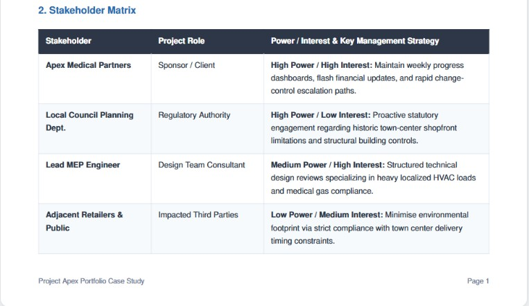
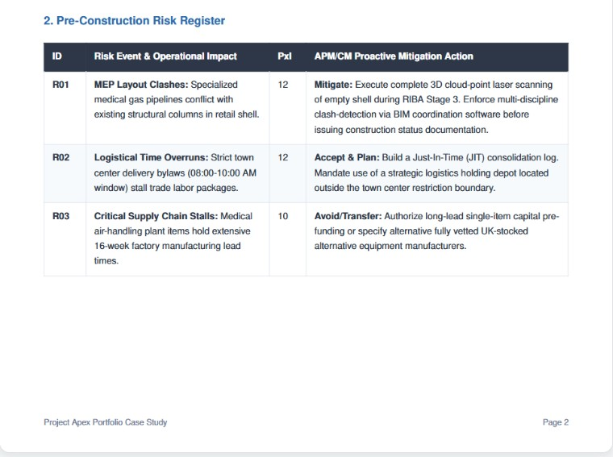
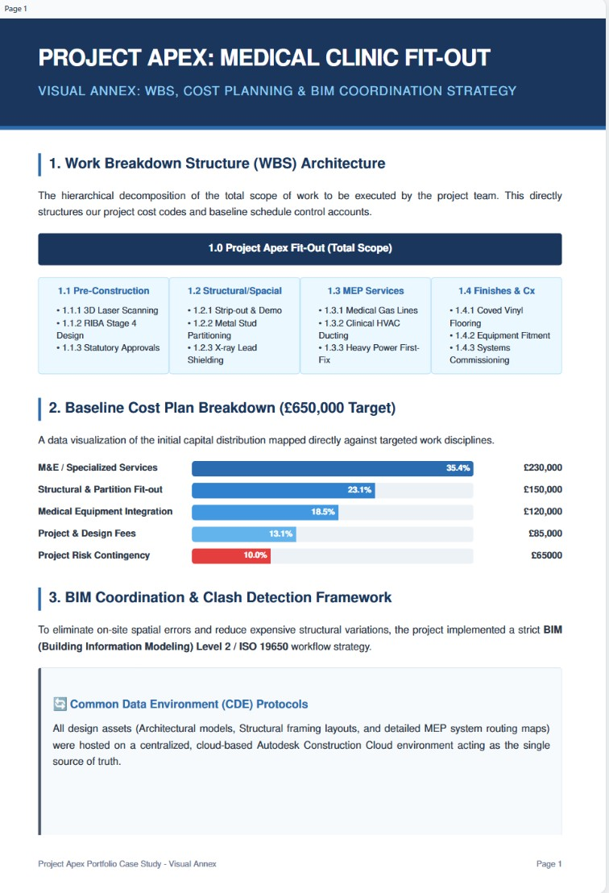
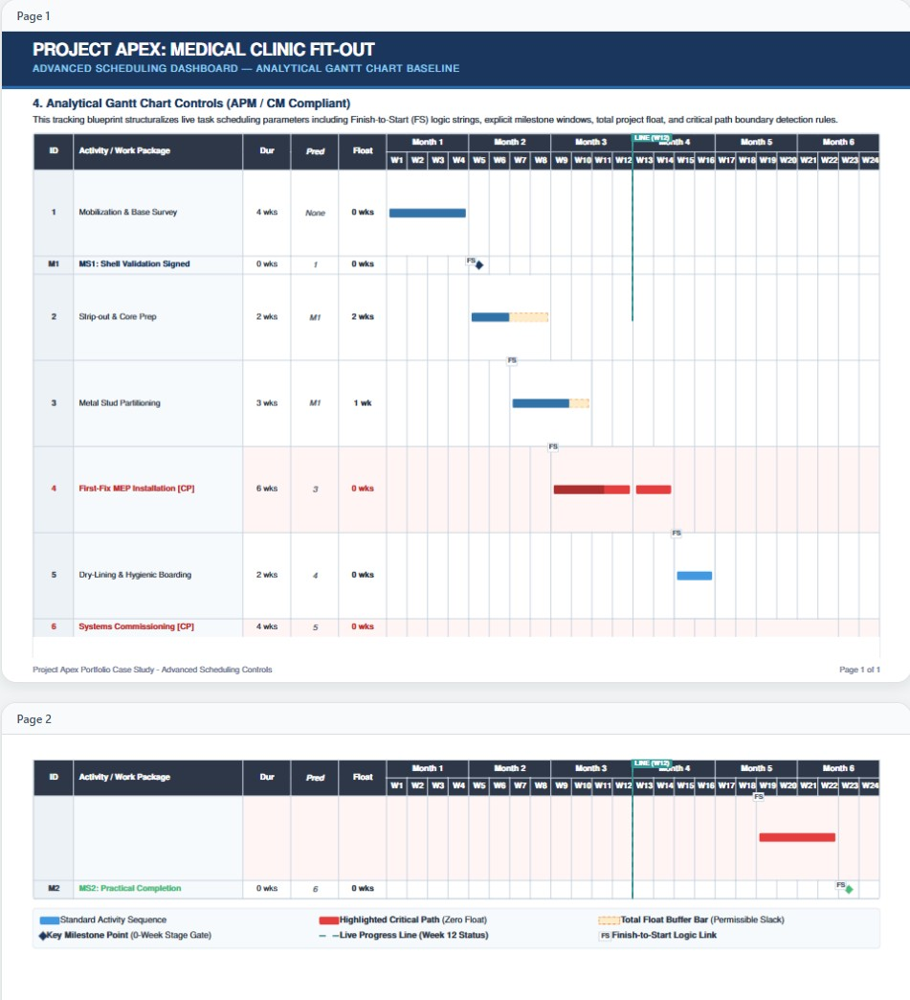
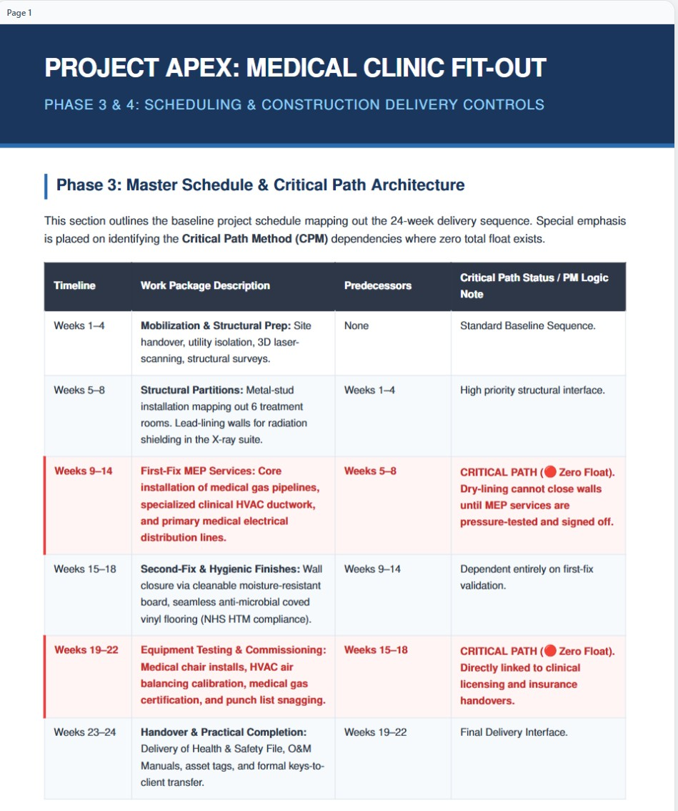
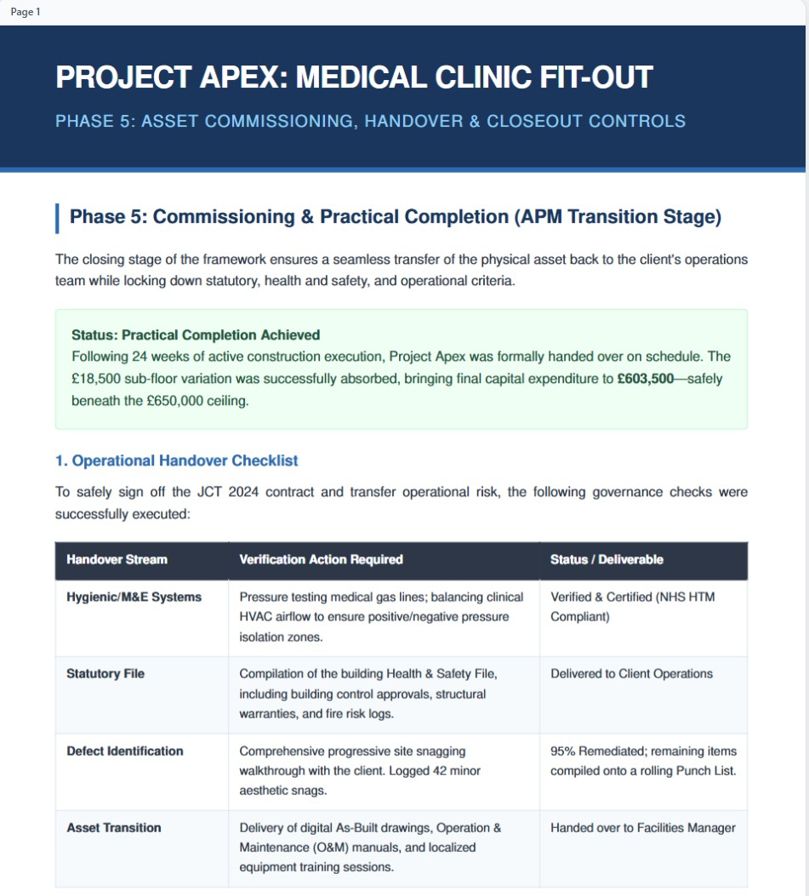
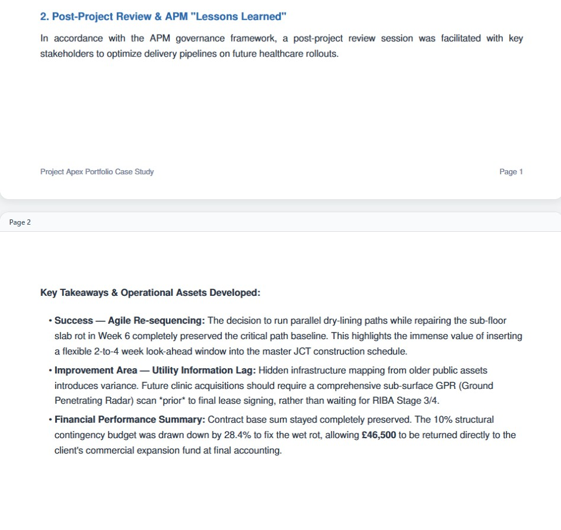

Project Overview
Project Apex is a simulated professional construction management portfolio project based on the transformation of a 450 sqm vacant retail shell into a modern private medical clinic. The project demonstrates full lifecycle construction management, including initiation, procurement, stakeholder engagement, risk control, scheduling, BIM coordination, construction delivery, commissioning, handover and post-project review.
Project Objectives
The project was structured around the delivery of a compliant and operationally ready private healthcare facility within a controlled time, cost, quality and governance framework.
- Deliver a 450 sqm private medical clinic fit-out within a 24-week baseline programme
- Maintain cost control within a £650,000 approved project budget
- Apply APM lifecycle governance from initiation through to handover and close-out
- Use JCT Design & Build 2024 as the recommended procurement and contractual framework
- Coordinate architectural design, MEP services, clinical finishes, BIM information and commissioning
- Demonstrate professional project controls through WBS, risk, cost, scheduling and change management
- Achieve practical completion on time, within the approved budget ceiling and to the required standard
Stakeholder Strategy
I developed a stakeholder management approach to identify key project participants, assess their power and interest and define suitable communication strategies. This included the client sponsor, project team, statutory authorities, adjacent retailers and members of the public.
- Identified high-power and high-interest stakeholders requiring close management
- Defined weekly reporting and financial update routes for the client
- Included statutory engagement with planning, Building Control and healthcare compliance stakeholders
- Considered neighbouring retailers, local residents and third-party disruption risks
- Established communication responsibilities and escalation routes

Skills demonstrated: stakeholder mapping, governance, communication planning and project reporting
Procurement Strategy
I recommended a Design and Build procurement route using the JCT Design and Build Contract 2024. This route was selected to support the controlled 24-week delivery programme and provide a single point of responsibility for design coordination and construction delivery.
- Recommended JCT Design & Build 2024
- Supported lump-sum commercial control against the approved budget
- Reduced interface risk through single-point contractor responsibility
- Improved coordination between architecture, MEP, clinical fit-out and construction delivery
- Aligned the procurement strategy with the client’s programme, quality and budget constraints
- Established formal procedures for instructions, valuations and change control
Skills demonstrated: procurement planning, contract awareness and commercial decision-making
Risk Management
I produced a pre-construction risk register covering key delivery risks, including MEP coordination clashes, town-centre logistics restrictions, hidden building conditions and long-lead medical plant procurement. Each risk was assessed using probability and impact before being assigned an owner and mitigation strategy.
- Identified high-impact technical, commercial and logistical risks before construction
- Used BIM coordination and survey information to reduce MEP clash risk
- Planned construction logistics around town-centre access and delivery constraints
- Addressed long-lead medical air-handling plant and specialist equipment procurement
- Considered latent defects and incomplete existing-building information
- Linked mitigation actions to accountable owners and project controls

Skills demonstrated: risk identification, assessment, mitigation planning and pre-construction control
WBS, Cost Plan & BIM Coordination
I developed a visual project controls annex demonstrating how the project scope was broken down, how the £650,000 budget was allocated and how BIM coordination supported design management and clash detection.
- Created a Work Breakdown Structure covering pre-construction, building works, MEP, finishes and commissioning
- Mapped the baseline cost plan against the major work packages
- Allocated £230,000 to mechanical, electrical and specialist clinical services
- Applied BIM and ISO 19650 information-management principles
- Referenced Common Data Environment controls using Autodesk Construction Cloud
- Demonstrated hard, soft and workflow clash-detection logic

Skills demonstrated: WBS development, cost planning, BIM coordination and ISO 19650 awareness
Advanced Scheduling Dashboard
I developed an analytical Gantt chart dashboard to demonstrate project controls capability. The schedule shows task sequencing, predecessor logic, Finish-to-Start relationships, float, milestones, a progress status line and critical-path activities.
- Created a 24-week approved baseline schedule
- Identified critical-path activities with zero total float
- Included Finish-to-Start predecessor logic
- Used milestone stage gates for shell validation, commissioning and practical completion
- Displayed float allowances for non-critical activities
- Added a Week 12 progress line to simulate live programme monitoring

Skills demonstrated: programme control, critical-path analysis, float management and milestone tracking
Construction Delivery & Change Control
During the simulated construction phase, an unmapped sub-floor wet-rot defect was discovered beneath the designated X-ray room. The defect created a potential three-week critical-path delay and an £18,500 remediation cost. I managed the issue through formal notification, impact assessment, change control, resequencing and controlled contingency drawdown.
- Identified a latent defect affecting structural suitability for heavy imaging equipment
- Assessed the potential time and cost impact against the approved baselines
- Raised a formal early notification and maintained supporting project records
- Resequenced dry-lining, partition and services activities to protect the critical path
- Approved an £18,500 variation through the controlled contingency process
- Reduced the potential three-week delay to zero net programme drift

Skills demonstrated: change control, delay mitigation, contingency management and contractual awareness
Commissioning, Handover & Close-Out
I structured the handover phase around statutory compliance, system performance, operational readiness and client acceptance. The project achieved practical completion within the 24-week baseline, with the £18,500 sub-floor variation absorbed within the original contingency allowance.
- Completed the operational handover checklist
- Verified MEP and clinical systems, including medical-gas pressure testing and HVAC balancing
- Compiled the Health and Safety File and statutory completion information
- Managed snagging and punch-list close-out
- Delivered O&M manuals, as-built drawings, warranties and facilities-team training
- Achieved practical completion within the approved 24-week programme

Skills demonstrated: commissioning, practical completion, handover documentation and close-out control
Lessons Learned
The post-project review identified lessons relating to agile resequencing, existing-building survey information, contingency control and future healthcare acquisition requirements. The project closed below the £650,000 approved ceiling, with final capital expenditure reported at £603,500.
- Agile resequencing protected the critical path during latent-defect remediation
- Future clinic projects should complete more intrusive surveys before design freeze
- Ground-penetrating radar and targeted opening-up surveys should be considered before lease finalisation
- Controlled contingency management protected the approved budget ceiling
- £46,500 remained below the approved £650,000 project funding limit
- Structured lessons learned improved future healthcare rollout planning

Skills demonstrated: post-project review, lessons learned, cost close-out and continuous improvement
Project Files
The complete simulated project portfolio is provided in structured parts to demonstrate initiation, procurement, stakeholder management, scheduling, construction delivery, BIM coordination, change control, commissioning, handover and post-project review.
Tools & Methods Used
This project applies structured construction project management and project controls methods commonly used across professional built-environment projects.
- APM project lifecycle governance
- JCT Design & Build 2024 procurement and change-control principles
- Work Breakdown Structure and baseline schedule planning
- Critical Path Method and float analysis
- Risk register and mitigation planning
- Cost planning, contingency control and final-account forecasting
- BIM and ISO 19650 information-management awareness
- Common Data Environment and clash-detection strategy
- Commissioning, practical completion and handover documentation
- Lessons learned and post-project review
Why This Project Matters
Project Apex demonstrates my ability to think and operate like a construction project manager across the complete project lifecycle. It shows how I would plan, coordinate, control, monitor and close out a technically complex healthcare fit-out project.
The project brings together stakeholder management, planning, procurement, risk management, cost control, BIM coordination, construction delivery, change management, commissioning, handover and lessons learned within one coherent professional portfolio simulation.